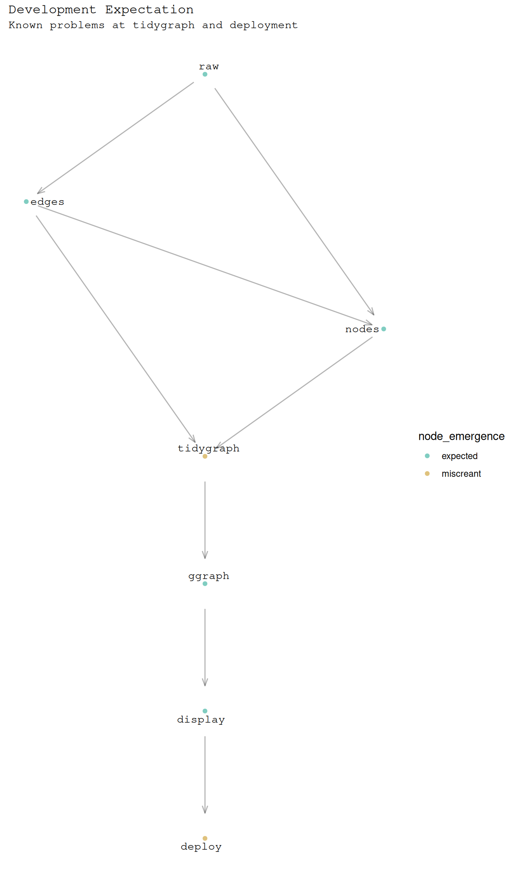

Code
# pkg
library(tidyverse)
library(ggraph)
library(tidygraph)Dr Charles T. Gray, Datapunk ![]()
Good Enough Data & Systems Lab
March 14, 2025
So, where to start with the button problem?
I get agile.
But, as a human, I feel overwhelmed.
Think of agile like this.
Leadership: Mirror, mirror on the wall,
who has the FAIRest vision of them all?
Product managers smash the mirror into pieces.
Developers smash those pieces into shards.
Different developers paint the shards in
tiny ways to make the vision FAIR.
Developers reassemble shards into pieces.
Product managers reassemble those pieces
into the mirror painted to leadership's vision.
Leadership: Mirror, mirror on the wall, forget FAIR,
I can't see my fucking face at all.
I can see why there was a breakdown between humans. I can see how flat/vertical cultural differences come into play.
But why is there an analogous breakdown for me developing alone?
Why do I feel like the greater my computational projects scale, the greater the anxiety? Why does nothing ever go as it should?
It’s the not knowing that drives me crazy. If I could just know what I know, at least see what the bounds of knowledge of this system is, I think I would feel less overwhelmed.
The answer is in chaos and category theory. Let’s go. Freeform.
These are all supported by the button package.
Fundamentally, there’s something to be learnt from the music project.
Assumption as a graph, .
It always starts with edges.
output key assumption: dataframe has
fromandto.
[1] TRUE TRUE[1] TRUE# A tibble: 8 × 2
from to
<chr> <chr>
1 raw edges
2 edges nodes
3 raw nodes
4 edges tidygraph
5 nodes tidygraph
6 tidygraph ggraph
7 ggraph display
8 display deploy Then node metadata often needs to be extracted or inferred.
A challenge is node joining happens after the graph object is created.
output key assumption: there is exactly
one row per nodeinB_edges
B_nodes <-
# extract nodes from edges
tibble(
node = c(B_edges$from, B_edges$to)
) |>
# filter to unique nodes
distinct() |>
# add node attributes
mutate(
# necessary
node_label = node,
# contextual
painpoint = if_else(
node %in% c("deploy", "tidygraph"),
TRUE,
FALSE
),
node_emergence = if_else(
painpoint == TRUE,
"miscreant",
"expected"
)
)the antijoin nodes and edges by node should have no rows
verify assumption
display nodes
# A tibble: 7 × 4
node node_label painpoint node_emergence
<chr> <chr> <lgl> <chr>
1 raw raw FALSE expected
2 edges edges FALSE expected
3 nodes nodes FALSE expected
4 tidygraph tidygraph TRUE miscreant
5 ggraph ggraph FALSE expected
6 display display FALSE expected
7 deploy deploy TRUE miscreant # A tbl_graph: 7 nodes and 8 edges
#
# A directed acyclic simple graph with 1 component
#
# Node Data: 7 × 4 (active)
name node_label painpoint node_emergence
<chr> <chr> <lgl> <chr>
1 raw raw FALSE expected
2 edges edges FALSE expected
3 nodes nodes FALSE expected
4 tidygraph tidygraph TRUE miscreant
5 ggraph ggraph FALSE expected
6 display display FALSE expected
7 deploy deploy TRUE miscreant
#
# Edge Data: 8 × 2
from to
<int> <int>
1 1 2
2 2 3
3 1 3
# ℹ 5 more rowsB_graph |>
ggraph() +
geom_edge_link(
arrow = arrow(
length = unit(0.02, "npc"),
angle = 20
),
alpha = 0.3,
start_cap = circle(0.03, 'npc'),
end_cap = circle(0.03, 'npc')
) +
geom_node_point(
aes(colour = node_emergence)
) +
geom_node_text(
aes(label = node_label),
repel = TRUE,
family = "Courier"
) +
theme_minimal() +
theme(
plot.title = element_text(
family = "Courier"
),
plot.subtitle = element_text(
family = "Courier"
),
plot.caption = element_text(
family = "Courier"
),
axis.text = element_blank(),
axis.title = element_blank(),
panel.grid = element_blank()
) +
labs(
title = "Development Expectation",
subtitle = "Known problems at tidygraph and deployment"
) +
ggplot2:::manual_scale(
"colour",
values = setNames(
c("#a6611a", "#018571","#dfc27d", "#80cdc1"),
c("violation", "virtuous", "miscreant", "expected")
)
)Using "sugiyama" as default layout
Experimented with api-ing some data in. Promising.